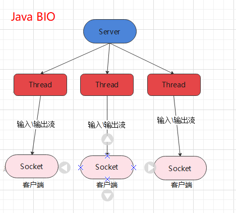

前言 都是需求推动发展，网络IO模型也是一样，IO的发展都是围绕C10问题。总的来说就是如何建立高并发的连接。接下来我就看一下IO模型从最初的阻塞BIO到NIO再到多路复用器，一步一步如何发展过来。
BIO 概念 
看上图，所谓的BIO就是 阻塞式IO，需要一个线程监听端口，这个线程只能阻塞式的监听，再也不能干别的，当有连接上来时，linux建立对应的连接（注意这一步时内核干的，其实应用层的线程没有接受，连接也已经建立了）,这时候线程accpet即可获得一个用来读写的FD，需要一个专门的线程用来进行读写操作，并且是阻塞式的，也就说，多少个用户连接上来，需要多少个线程来进行处理。
代码 Server:
1 2 3 4 5 6 7 8 9 10 11 12 13 14 15 16 17 18 19 20 21 22 23 24 25 26 27 28 29 30 31 32 33 34 35 36 37 38 39 40 41 42 import java.io.BufferedReader;import java.io.IOException;import java.io.InputStream;import java.io.InputStreamReader;import java.net.ServerSocket;import java.net.Socket;public class SocketBIO public static void main (String[] args) throws Exception ServerSocket server = new ServerSocket(9090 ,20 ); System.out.println("step1: new ServerSocket(9090) " ); while (true ) { Socket client = server.accept(); System.out.println("step2:client\t" + client.getPort()); new Thread(new Runnable(){ public void run () InputStream in = null ; try { in = client.getInputStream(); BufferedReader reader = new BufferedReader(new InputStreamReader(in)); while (true ){ String dataline = reader.readLine(); if (null != dataline){ System.out.println(dataline); }else { client.close(); break ; } } System.out.println("客户端断开" ); } catch (IOException e) { e.printStackTrace(); } } }).start(); } } }
Client:
1 2 3 4 5 6 7 8 9 10 11 12 13 14 15 16 17 18 19 20 21 22 23 24 25 26 27 28 import java.io.*;import java.net.Socket;public class SocketClient public static void main (String[] args) throws InterruptedException try { Socket client = new Socket("127.0.0.1" ,9090 ); Thread.sleep(5000 ); client.setSendBufferSize(20 ); client.setTcpNoDelay(true ); OutputStream out = client.getOutputStream(); InputStream in = System.in; BufferedReader reader = new BufferedReader(new InputStreamReader(in)); while (true ){ String line = reader.readLine(); if (line != null ){ byte [] bb = line.getBytes(); for (byte b : bb) { out.write(b); } } } } catch (IOException e) { e.printStackTrace(); } } }
系统调用 上述代码对应的系统调用可用Strace命令进行查看,流程如下:
NIO 概念: BIO，每次上来一个用户需要开辟一个线程来维持会话，随着并发越来越大，资源开销太大了也，尽管我们可以使用线程池进行复用，可终归是治标不治本，所以我们急需一套真正的解决方法，来应付高并发。
我们思考一下，BIO的问题在哪？阻塞！主线程在监听端口的时候是阻塞式监听的，这就让它只能干这一个事情。同样读写的FD分配之后，持有FD的线程也是阻塞式的等待消息，不能干别的，这就是问题的根本原因。
所谓的NIO，就是非阻塞式IO（可以暂时这么理解）,我们假想一下，如果每次执行accpet、read这些系统调用都不是阻塞的，也就是说，有就有，没有就拉倒，那这个事情就太好办了。我们只需要一个线程，监听端口，然后accept 有连接就建立，没有就返回，我们把已经建立的连接，维护在一个集合里面，我们去遍历集合，挨个做读操作，因为read不阻塞，我们就可以对所有的连接进行处理了，尽管这样可能会慢一些，但相比BIO，我们已经可以用单个线程来应用多个连接，而不是一个连接需要一个线程来并发处理。
代码 1 2 3 4 5 6 7 8 9 10 11 12 13 14 15 16 17 18 19 20 21 22 23 24 25 26 27 28 29 30 31 32 33 34 35 36 37 38 39 40 41 42 43 44 45 46 47 48 49 50 package com.bjmashibing.system.io;import java.net.InetSocketAddress;import java.net.StandardSocketOptions;import java.nio.ByteBuffer;import java.nio.channels.ServerSocketChannel;import java.nio.channels.SocketChannel;import java.util.LinkedList;public class SocketNIO public static void main (String[] args) throws Exception System.out.println(System.currentTimeMillis()/1000 ); LinkedList<SocketChannel> clients = new LinkedList<>(); ServerSocketChannel ss = ServerSocketChannel.open(); ss.bind(new InetSocketAddress(9090 )); ss.configureBlocking(false ); while (true ) { SocketChannel client = ss.accept(); if (client == null ) { } else { client.configureBlocking(false ); int port = client.socket().getPort(); System.out.println("client..port: " + port); if (port == 15098 ) System.out.println(System.currentTimeMillis()/1000 ); clients.add(client); } ByteBuffer buffer = ByteBuffer.allocateDirect(4096 ); for (SocketChannel c : clients) { int num = c.read(buffer); if (num > 0 ) { buffer.flip(); byte [] aaa = new byte [buffer.limit()]; buffer.get(aaa); String b = new String(aaa); System.out.println(c.socket().getPort() + " : " + b); buffer.clear(); } } } } }
系统调用
多路复用器 概念 有了NIO，我们已经可以用单个线程来应对多个连接，这样就可以极大的减少资源开销了。接下来就要考虑效率性能问题了。那如何优化呢？我们知道，我们现在一定是先触发accpet、read调用才知道到底有没有连接，有没有数据上来，换句话说，比如我们已经建立了1000个连接，但实际上并发消息并不多，可能只有1个人在频繁的发，剩余999都是沉默的状态，那我们不断的轮训，不断的对1000个FD执行read操作，实际上都是无用的，因为只有那1个才是有效的调用。
关键问题是，对我应用层而言，有没有消息我是先调了才知道的，我如何才能避开无效的调用呢？实际上，接下来的优化 对应用层已经没什么办法了，接下来的优化只能是内核来去做了。
内核如何做？接下来就是多路复用器 了
多路复用器的作用就是，让内核来帮你维护有事件的FD集合,线程要进行处理的时候，先做一步select操作，内核立刻返回一个集合，集合内是已经有事件的FD ，应用程序只需要遍历FD，做对应的处理即可。
多路复用器的具体有3种，select、poll、epoll 在linux对应的系统调用。接下来 我们从原理上来解释一下它们的区别和演进过程。最后用一个JAVA代码来进行一个实战的应用讲解。
Select、Poll select作为第一代的多路复用器，其大致原理应用程序在内存开辟一个读集合用来存放专门读的文件描述符,在开辟一个写集合专门存放用来写的集合，调用select操作时，需要将集合传递给内核，内核来线性遍历集合里的文件描述符，看看哪个已经处于就绪状态了。我们也可以从系统调用的原形上来观察。
1 2 int select (int nfds, fd_set *readfds, fd_set *writefds, fd_set *exceptfds, struct timeval *timeout)
而 poll在本质上和select没有区别，原理是一样的。
Epoll Epoll可以说是性能最好，现在应用最广泛的多路复用器,它也是在select、poll基础上优化来的。
我们想一下，select poll有哪些可以优化的地方
1. 调用select 时，需要传递FD，从用户态传到内核态，FD多的时候 是一笔不小的开销。
1. 内核通过轮训来查看寻找就绪的FD，时间复杂度O(n),FD多了，势必会慢
Epoll就解决了这两个问题。
它的原理是，首先在内核开辟一个空间用来组织所关心的文件描述符,所用的数据结构是红黑树,然后下一步，进行注册，将需要进行检测的FD 注册进红黑树,最后一步，执行类似select的操作，让内核返回就绪的文件描述符。这样，首先用户态不需要每次调用都得传递FD集合了！那么，内核是如何避免轮训查找就绪的FD呢？
我们思考一点，对应的FD什么时候就变的有序的呢？这里需要一点计组的前置知识。换句话说当 网卡有数据了，内核怎么知道数据到来了呢？从原始的 CPU程序式、中断式，到现在的DMA，CPU逐渐摆脱数据IO传输的工作，把更多的时间用于计算，但IO数据通过DMA搬运到内存之后，cpu还是要知道的呀，才能完成下一步的工作。也就是说，DMA把网卡数据搬运到内存之后，通过中断高知CPU数据到了内存buffer了，这时候内核就知道了哦，其对应的FD已经就绪了！所以，CPU在中断这一步就可以维护好就绪的FD，而不用后期再去轮训判断了。那Epoll的做法就是 内核维护一个链表，存放就绪的FD，中断时候就塞进链表，用户态调用Epoll_wait时候，内核直接返回此链表,O(1)
我们再来看一下 这3个重要的系统调用
1 2 3 epoll_create():内核开辟区域，建立红黑树 epoll_ctl():用来对FD做一些操作,比如：将FD读事件 注册进红黑树 epoll_wait():用来获取就绪的FD集合
具体流程如下 ：
代码解释 1 2 3 4 5 6 7 8 9 10 11 12 13 14 15 16 17 18 19 20 21 22 23 24 25 26 27 28 29 30 31 32 33 34 35 36 37 38 39 40 41 42 43 44 45 46 47 48 49 50 51 52 53 54 55 56 57 58 59 60 61 62 63 64 65 66 67 68 69 70 71 72 73 74 75 76 77 78 79 80 81 82 83 84 85 86 87 88 89 90 91 92 93 94 95 96 97 98 99 100 101 102 103 104 105 106 107 108 109 110 111 112 113 114 115 116 117 118 119 120 121 122 123 124 125 126 127 128 129 130 131 132 133 134 135 136 137 138 import java.io.IOException;import java.net.InetSocketAddress;import java.nio.ByteBuffer;import java.nio.channels.*;import java.util.HashMap;import java.util.Iterator;import java.util.Set;public class SocketMultiplexingSingleThreadv1 private ServerSocketChannel server = null ; private Selector selector = null ; int port = 9090 ; public void initServer () try { server = ServerSocketChannel.open(); server.configureBlocking(false ); server.bind(new InetSocketAddress(port)); selector = Selector.open(); server.register(selector, SelectionKey.OP_ACCEPT); } catch (IOException e) { e.printStackTrace(); } } public void start () initServer(); System.out.println("服务器启动了。。。。。" ); try { while (true ) { Set<SelectionKey> keys = selector.keys(); System.out.println(keys.size()+" size" ); while (selector.select() > 0 ) { Set<SelectionKey> selectionKeys = selector.selectedKeys(); Iterator<SelectionKey> iter = selectionKeys.iterator(); while (iter.hasNext()) { SelectionKey key = iter.next(); iter.remove(); if (key.isAcceptable()) { acceptHandler(key); } else if (key.isReadable()) { readHandler(key); } } } } } catch (IOException e) { e.printStackTrace(); } } public void acceptHandler (SelectionKey key) try { ServerSocketChannel ssc = (ServerSocketChannel) key.channel(); SocketChannel client = ssc.accept(); client.configureBlocking(false ); ByteBuffer buffer = ByteBuffer.allocate(8192 ); client.register(selector, SelectionKey.OP_READ, buffer); System.out.println("-------------------------------------------" ); System.out.println("新客户端：" + client.getRemoteAddress()); final String[] split = client.getRemoteAddress().toString().split(":" ); if (split[1 ].equals("15098" )) System.out.println(System.currentTimeMillis()/1000 ); System.out.println("-------------------------------------------" ); } catch (IOException e) { e.printStackTrace(); } } public void readHandler (SelectionKey key) SocketChannel client = (SocketChannel) key.channel(); ByteBuffer buffer = (ByteBuffer) key.attachment(); buffer.clear(); int read = 0 ; try { while (true ) { read = client.read(buffer); if (read > 0 ) { buffer.flip(); while (buffer.hasRemaining()) { client.write(buffer); } buffer.clear(); } else if (read == 0 ) { break ; } else { client.close(); break ; } } } catch (IOException e) { e.printStackTrace(); } } public static void main (String[] args) SocketMultiplexingSingleThreadv1 service = new SocketMultiplexingSingleThreadv1(); System.out.println(System.currentTimeMillis()/1000 ); service.start(); } }
系统调用 上述的代码，同一套代码，底层可以选用不同的多路复用器
小结
select的几大缺点：
每次调用select，都需要把fd集合从用户态拷贝到内核态，这个开销在fd很多时会很大
同时每次调用select都需要在内核遍历传递进来的所有fd，这个开销在fd很多时也很大
select支持的文件描述符数量太小了，默认是1024
poll的实现和select非常相似，只是描述fd集合的方式不同
select，poll每次调用都要把fd集合从用户态往内核态拷贝一次。
poll提供了三个函数，epoll_create,epoll_ctl和epoll_wait，epoll_create是创建一个epoll句柄；epoll_ctl是注册要监听的事件类型；epoll_wait则是等待事件的产生
对于第一个缺点，epoll的解决方案在epoll_ctl函数中。每次注册新的事件到epoll句柄中时（在epoll_ctl中指定EPOLL_CTL_ADD），会把所有的fd拷贝进内核，而不是在epoll_wait的时候重复拷贝。epoll保证了每个fd在整个过程中只会拷贝一次。
对于第二个缺点，epoll利用在中断时添加回调函数，这个回调函数会把就绪的fd加入一个就绪链表。epoll_wait的工作实际上就是在这个就绪链表中查看有没有就绪的fd。
表面上看epoll的性能最好，但是在连接数少并且连接都十分活跃的情况下，select和poll的性能可能比epoll好，毕竟epoll的通知机制需要很多函数回调
总结 我们通过从BIO->NIO->多路复用器 优化过程，尽可能的理解为什么有这些东西，以及如何发展来的。网络IO模型是基石，无论mysql、redis 还是各种RPC框架，只要涉及到网络通信，都需要用到IO模型，可以说是重中之重，一定要理解到位。

This is copyright.